Ternary logic and ternary computers: A brief introduction
Salvatore Pappalardo
Modern Computers
0101011101101100010010101010100010101010110101000000011010101110111011010101000100001010010110101010001000010100
Number Representations
We represent numbers using the positional system $$ N = d_0 r^0 + d_1 r^1 + d_2 r^2 + d_3 r^3 + \dots $$
For example, in base 10 $$ 48239 = 9 \cdot 10^0 + 3 \cdot 10^1 + 2 \cdot 10^2 + 8 \cdot 10^3 + 4 \cdot 10^4 $$
It also works with negative powers: $$ 0.352 = 0 \cdot 10^0 + 3 \cdot 10^{-1} + 5 \cdot 10^{-2} + 2 \cdot 10^{-3} $$
Number Representations
We represent numbers using the positional system $$ N = d_0 r^0 + d_1 r^1 + d_2 r^2 + d_3 r^3 + \dots $$
For example, in base 10 $$ 48239 = 9 \cdot 10^0 + 3 \cdot 10^1 + 2 \cdot 10^2 + 8 \cdot 10^3 + 4 \cdot 10^4 $$
It also works with negative powers: $$ 0.352 = 0 \cdot 10^0 + 3 \cdot 10^{-1} + 5 \cdot 10^{-2} 2 + \cdot 10^{-3} $$
Base 2 - Binary
Base 2 works in the same way as Base 10. $$ (10111)_2 = 1 \cdot 2^0 + 1 \cdot 2^1 + 1 \cdot 2^2 + 0 \cdot 2^3 + 1 \cdot 2^4 = (23)_{10} $$
Why base 3?
Why base 3?
Not all bases are equally good.
We can compute the cost of representing a value $n$ as the product of the depth of the alphabet and the width of the representation.
- detph($d$): it is the amount of different letters in an a alphabet. Bigger bases need a bigger alphabet
- width($w$): how many letters to represent a value. Smaller bases need more letters to represent big values
Why base 3?
Not all bases are equally good.
We can compute the cost of representing a value $n$ as the product of the depth of the alphabet and the width of the representation.
- detph($d$): it is the amount of different letters in an a alphabet. Bigger bases need a bigger alphabet
- width($w$): how many letters to represent a value. Smaller bases need more letters to represent big values
For example: $$ (10000)_{16} = (65'536)_{10} = (1\_0000\_0000\_0000\_0000)_{2}$$
| Base | Detph ($d$) | Width ($w$) | Cost ($w \cdot d$) |
|---|---|---|---|
| 2 | 2 | 17 | 34 |
| 10 | 10 | 5 | 50 |
| 16 | 16 | 5 | 80 |
Let's add Base 3
$$ (10000)_{16} = (65'536)_{10} = \mathbf{(10\_022\_220\_021)_3}= (1\_0000\_0000\_0000\_0000)_{2}$$
| Base | Detph ($d$) | Width ($w$) | Cost ($w \cdot d$) |
|---|---|---|---|
| 2 | 2 | 17 | 34 |
| 3 | 3 | 11 | 33 |
| 10 | 10 | 5 | 50 |
| 16 | 16 | 5 | 80 |
Base three has the most compact representation
As it turns out, base 3 is the best (practical) base for representing numbers.
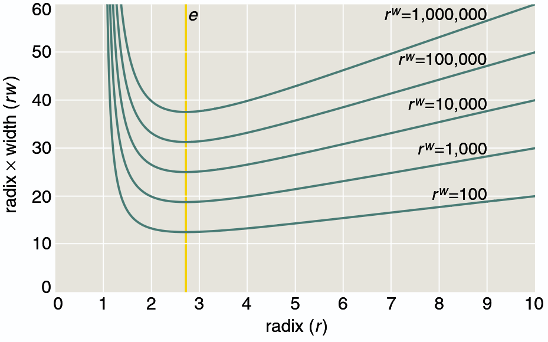
[Brian Hayes, "Third Base", American Scientist vol. 89 n. 6, 2001]
Base three has the most compact representation
As it turns out, base 3 is the best (practical) base for representing numbers.
[Brian Hayes, "Third Base", American Scientist vol. 89 n. 6, 2001]
Why Base 3 ?
- IoT devices generated 64.2 Zettabytes ($10^{21}$) in 2021
- Moore's law is saturating
Need to have denser computers
Using less components
In the 50s the hypotesis was that a computer's components count ($N$) would be proportional to the width ($w$) and the depth ($d$) of the representations of the numbers. $$ N \propto w \cdot d $$
Using less components
In the 50s the hypotesis was that a computer's components count ($N$) would be proportional to the width ($w$) and the depth ($d$) of the representations of the numbers. $$ N \propto w \cdot d $$
It wasn't true...
Using less components
In the 50s the hypotesis was that a computer's components count ($N$) would be proportional to the width ($w$) and the depth ($d$) of the representations of the numbers. $$ N \propto w \cdot d $$
It wasn't true...
In setun, a single trit (Ternary Digit) used a pair of magnetic cores $ \approx 1.58$ bits.
The same pair could have held 2 bits.
Hope for the future
Ternary computer have failed due to the cost of the trit (ternary digit, as opposed to bit)
Future technologies might overcome this barrier.
Ternary Logic
Wikipedia says that there are many different ways of doing ternary logic:
- The Kleene and Priest logic
- Łukasiewicz logic
- RM3 logic
- HT logic
$ \cdots $
Ternary Logic
Wikipedia says that there are many different ways of doing ternary logic:
- The Kleene and Priest logic
- Łukasiewicz logic
- RM3 logic
- HT logic
$ \cdots $
Mathematicians being mathematicians...
And their representation
Ternary numeral system - $\{0,1,2\}$
And their representation
Ternary numeral system - $\{0,1,2\}$
Balanced ternary - $\{-1, 0, 1\}$
Redundant binary presentation - $\{-1, 0, 0/1, 0/1\}$
$\cdots$
Standard Ternary Logic
source: The Ternary Manifesto by Douglass W. Jones
The constants
| truth value | numeric | short form |
|---|---|---|
| true | +1 | + |
| unknown | 0 | 0 |
| false | –1 | – |
Monadic Operators
i.e. unary operators
| input | false | identity | not | true |
|---|---|---|---|---|
| false | false | false | true | true |
| true | false | true | false | true |
Monadic Operators
i.e. unary operators
Monadic operators in binary: $2^2 = 4$
Monadic operators in ternary: $3^3 = 27$
| input | false | identity | not | true |
|---|---|---|---|---|
| false | false | false | true | true |
| true | false | true | false | true |
| input | 0 | 1 | 2 | 3 | 4 | 5 | 6 | 7 | 8 | 9 | A | B | C | D | E | F | G | H | K | M | N | P | R | T | V | X | Z |
|---|---|---|---|---|---|---|---|---|---|---|---|---|---|---|---|---|---|---|---|---|---|---|---|---|---|---|---|
| – | – | 0 | + | – | 0 | + | – | 0 | + | – | 0 | + | – | 0 | + | – | 0 | + | – | 0 | + | – | 0 | + | – | 0 | + |
| 0 | – | – | – | 0 | 0 | 0 | + | + | + | – | – | – | 0 | 0 | 0 | + | + | + | – | – | – | 0 | 0 | 0 | + | + | + |
| + | – | – | – | – | – | – | – | – | – | 0 | 0 | 0 | 0 | 0 | 0 | 0 | 0 | 0 | + | + | + | + | + | + | + | + | + |
Negation
| a | c |
|---|---|
| – | + |
| 0 | 0 |
| + | – |
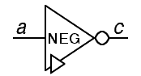
c = – a
Increment and Decrement
| Increment | Decrement | ||||||||||||||||
|
|
||||||||||||||||
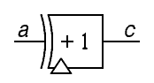 |
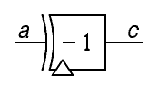 |
||||||||||||||||
c = (a+1) |
c = (a-1) |
Decoders
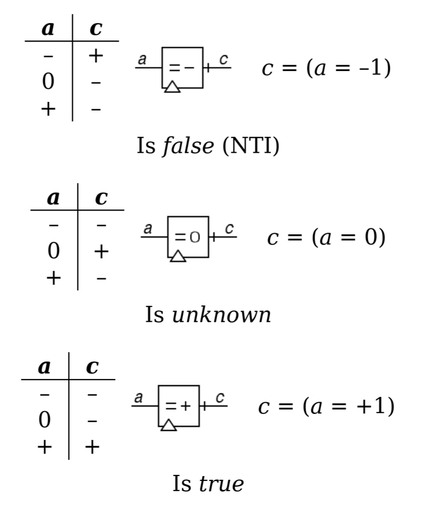
Decoders - II
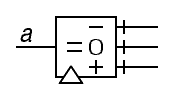
Diadic Operators
The diadic operators have two operands.
In standard binary logic, we have 16 possibilities ($2^4$). Not all of them are useful as there is some redundancy.
Some examples are: AND, OR, XOR, NOR, NAND, ...
Ternary logic has $3^9 = 19'683$ possibilities.
Ternary AND - a.k.a. MIN
| 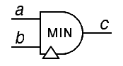 | c = (a ∧ b) = min(a, b) | |||||||||||||||||||||
Ternary OR - a.k.a. MAX
| 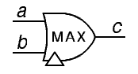 | c = (a ∨ b) = max(a, b) | |||||||||||||||||||||
A simple example of circuit
A diadic (modulo-3) adder
| 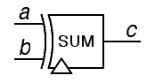 | c = (a + b) | |||||||||||||||||||||
adder - implementation
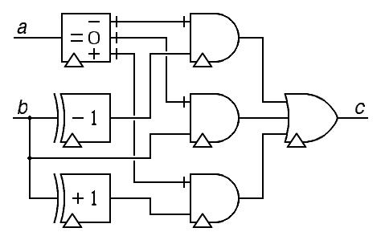
(a + b) = ( (a = –1) ∧ (b – 1) ) ∨ ( (a = 0) ∧ (b) ) ∨ ( (a = +1) ∧ (b + 1) )
Historical successes
In the past 70 years there were some attempts at creating ternary computers
- Thomas Fowler's ternary machine
- SETUN
- SETUN 70
- TERNAC
- QTC-1
The record: SETUN
It sold about 50 units.
Advantages:
- Utilized fewer elements than binary computers
- For this reason, the power requirements were more limited
- The ternary system is more efficient (information theory)
Why it failed:
- Ternary circuits are unfamiliar to design
- Binary circuit were more efficient
- Inertia and conservatism of the scientific and engineering communities

Why Ternary Today?
- TCAMS
- Ternary NNs
Content Addressable Memory (CAM)
CAMs are memories that work upside-down.
Given the content, the output is the address where that content lives.
CAMs are used in many applications:
- Network Routers
- Fully Associative Cache
- Decision Trees Inference
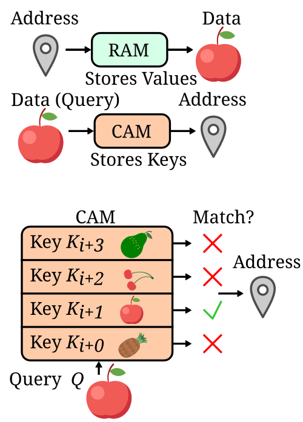
Ternary CAMs
The ''Ternary'' in TCAM means that we add a third state
a don't care or unknown
This enables the search for incomplete data
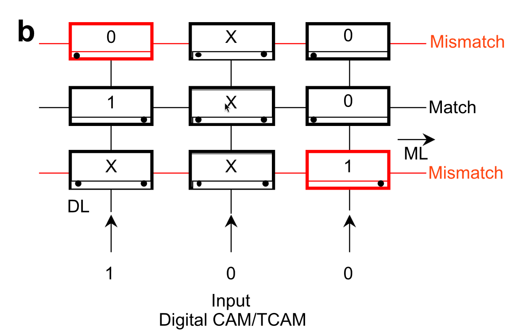
Ternary Weights Neural Networks
Microsoft recently published BitNet, an LLM framework with only ternary weights.
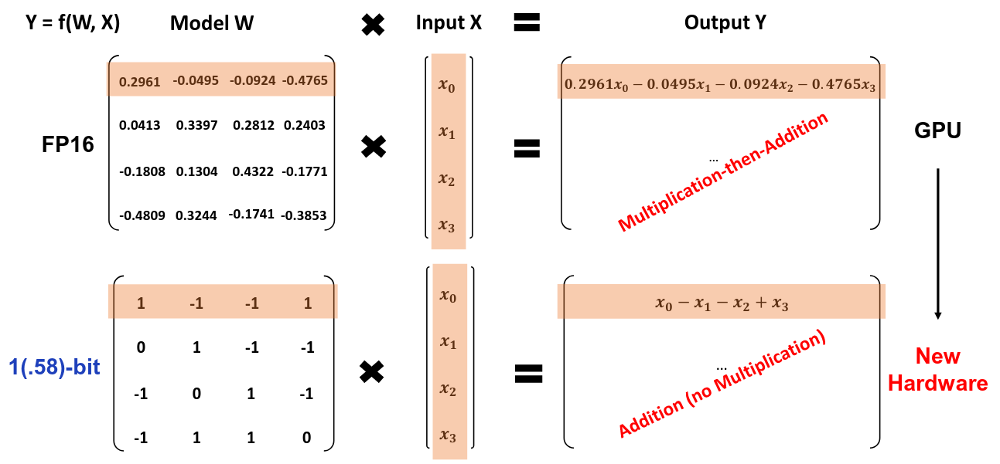
BitNet Performance
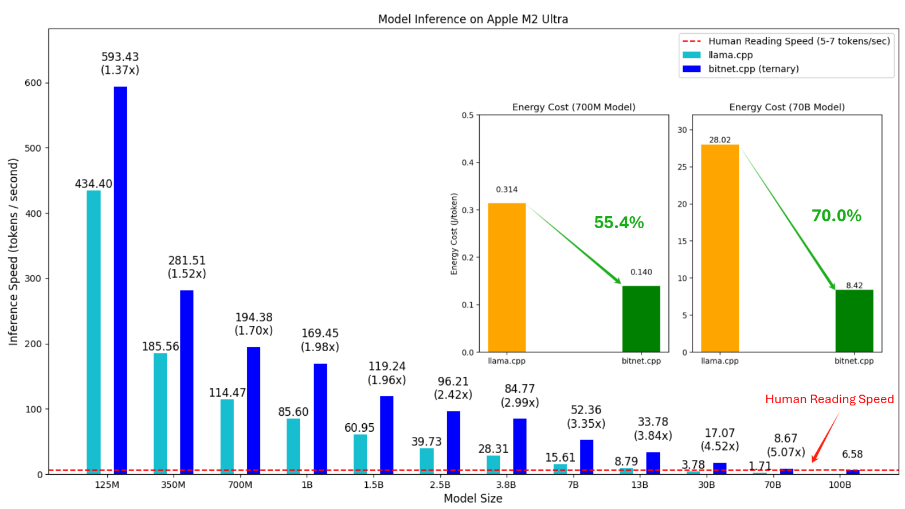
Conclusions
- Ternary logic can be used to make beautiful computating machines
- The technology has improved... But are we there yet?
- Full designs are lost to time (as far as I can tell)
- Possibility to explore heterogeneous binary/ternary designs
References
- "The Ternary Manifesto," Douglass W. Jones, Website
- "Third Base," Brian Hayes, American Scientist, Volume 89, Number 6, 2001
- "Big Data Analytics for intelligent manufacturing systems: A review," J. Wang et al., 2021
- "Ternary Computers," G. Frieder and C. Luk, MICRO 5: Conference record of the 5th annual workshop on Microprogramming, 1972
- "Ternary Computers: The Setun and the Setun 70," N.P. Brusentsov, J. R. Alvarez, Springer Berlin Heidelberg, 2011
- "Ternary Weight Networks," F. Li et al., 2022
- "Ternary Neural Networks for Resource-Efficient AI Applications," Hande Alemdar et al., 2017
- "1-bit AI Infra: Part 1.1, Fast and Lossless BitNet b1.58 Inference on CPUs," J. Wang et al., 2024
- "The Era of 1-bit LLMs: All Large Language Models are in 1.58 Bits," S. Ma et al., 2024
Salvatore Pappalardo